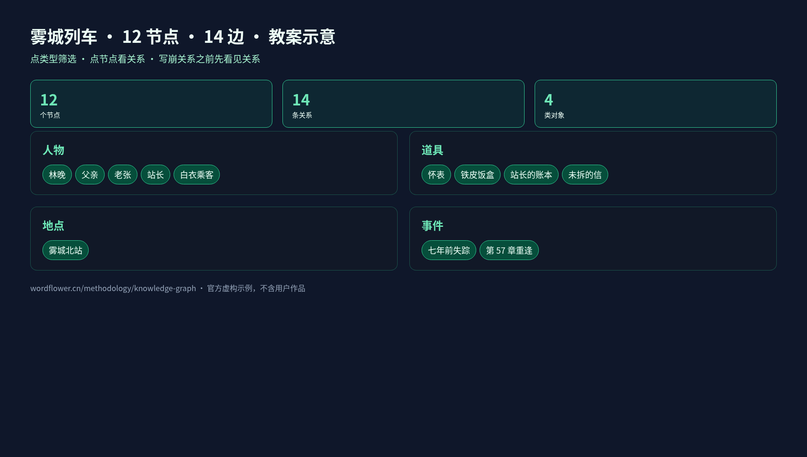
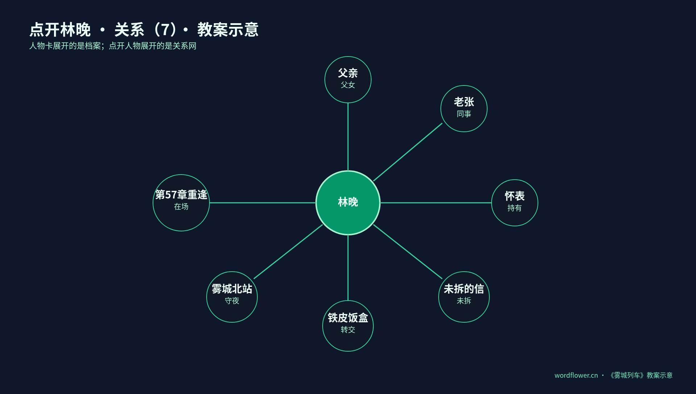
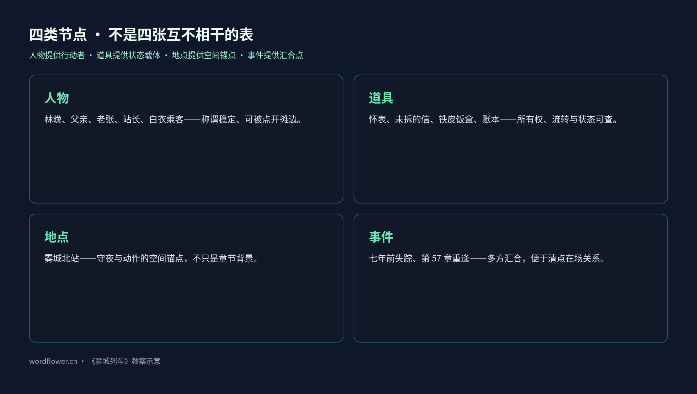
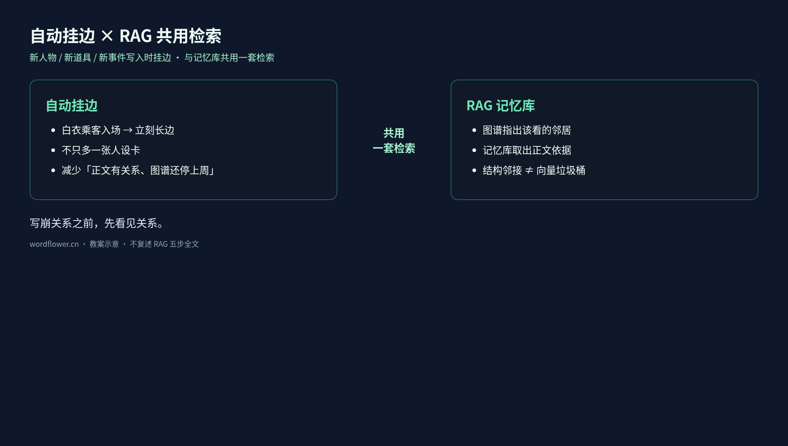

12 个节点 14 条边：长篇关系不崩靠知识图谱，不是人设备忘录
写崩关系之前，先看见关系。
—— 妙笔生花 · 知识图谱教案口径
长篇写到后半，读者常比作者更清楚谁和谁有过节、某件道具在谁手里、某次重逢牵动哪些旧线。人设卡写得再细，也常只是一叠彼此没有连线的卡片。
妙笔生花用可交互的知识图谱教案演示这件事：把虚构示例《雾城列车》的人物、道具、地点与事件画成一张网——点任何节点，关系一眼摊开。下文节点数、边数与摘句均为教案示意，只讲机制，不是用户作品实测，也不等于产品性能指标。
阅读顺序：
- 先看一张网里有什么：12 个节点、14 条关系、4 类对象
- 再点开林晚，看 7 条边如何把「档案」变成「关系」
- 弄清为什么道具和事件也必须是节点
- 看自动挂边如何与 RAG 共用检索（轻点接口，不复述检索五步）
- 对照四种关系写崩模式，做自检

人设表能记人，却接不住关系网
人物表通常最先填满：姓名、身份、性格、经历。写到中段再补地点、道具、事件。资料有用，但默认仍是并列的卡片。
林晚的人设卡可以写得很清楚：主角，夜班检车员，七年前父亲失踪后留在雾城北站。只看这张卡，作者知道她是谁，却不能立刻回答：
- 她和老张现在是什么工作关系？
- 怀表是否仍由她持有？
- 「未拆的信」处在什么状态？
- 铁皮饭盒经过怎样的转交？
- 「第 57 章重逢」现场有谁在场？
答案若全靠翻设定、搜章节、凭印象拼接，关系越多越费时。常见翻车不是「完全没写过」，而是写过，却看不见连接。
知识图谱补的是连接层：节点可按人物 / 道具 / 地点 / 事件筛选，边带关系类型，点节点看关系。人设表回答「是谁」；图谱还要回答「和谁、凭什么、此刻怎样连着」。
一张网看什么：12 · 14 · 4
教案《雾城列车》最小样本给出三个结构计数（均为示意）：
| 计数 | 含义 |
|---|---|
| 12 个节点 | 可识别、可追踪的对象 |
| 14 条关系 | 连接两个节点的边 |
| 关系类型 4 类 | 筛选与理解边的语义维度（页面按人物 / 道具 / 地点 / 事件做类型筛选） |
公开演示里能直接点到的节点名包括：林晚、父亲、老张、站长、白衣乘客、怀表、铁皮饭盒、站长的账本、未拆的信、雾城北站、七年前失踪、第 57 章重逢。关系谓词示例有：父女、同事、持有、未拆、转交、守夜、留下、当事人、在场、值班、驻守、保管、出现在等。
重点不在背表，而在用法：先筛选类型，再点节点摊开边。不必把十二个名字同时装进工作记忆，沿当前章节碰到的对象往外读一层即可。
点开林晚：七条边一眼摊开
教案给林晚标了 关系（7）。点开后出现的不是小传，而是七条可核对的边：

| 关系 | 对象 | 续写时立刻用得上的信息 |
|---|---|---|
| 父女 | 父亲 | 亲缘主线仍在场，不是背景一句带过 |
| 同事 | 老张 | 值班对话、交接班有既有协作基础 |
| 持有 | 怀表 | 道具可进入动作与情绪，所有权清楚 |
| 未拆 | 未拆的信 | 状态本身是戏剧压力：拆或不拆都要付代价 |
| 转交 | 铁皮饭盒 | 流转关系：东西怎么到她手上、还会交给谁 |
| 守夜 | 雾城北站 | 空间锚点：她为何「应该」出现在北站夜班 |
| 在场 | 第 57 章重逢 | 事件锚点：重逢现场她是当事人之一 |
它可与伏笔教案里的「第 57 章回收」对接，但职责不同：伏笔时间线回答一条线是否仍欠读者答案；知识图谱回答重逢事件节点上谁与什么连着。一个管呼吸长度，一个管结构邻接，两套视图不宜互相替代。
人物卡展开的是一份档案；点开人物展开的是一段关系网络。
为什么道具和事件也必须是节点
如果只做「谁认识谁」的社交图，不过是通讯录升级版。长篇更容易崩在人物如何通过道具、地点、事件发生联系。

人物提供行动者与称谓稳定性（林晚、父亲、老张、站长、白衣乘客）。若把所有信息塞进人物小传，道具和事件就无法独立追踪。
道具保存所有权、流转与状态。怀表对应「持有」；未拆的信把「未拆」写成可查询的状态，而不是形容词；铁皮饭盒强调「转交」；站长的账本提示保管与职责。人物关系没变，道具状态可能已变——只记「林晚认识老张」，仍不知道饭盒在谁手里。
地点提供空间锚点。雾城北站既是守夜地点，也是许多动作的默认舞台。没有地点节点，「她值夜班」只是设定句；有了「守夜 → 雾城北站」，续写时才好检查人物该不该出现在这里。
事件提供时间与多方汇合点。「七年前失踪」把父亲线钉在可引用的事件节点上；「第 57 章重逢」让在场人物与相关道具挂到同一汇合点。没有事件节点，人物往往只剩静态「认识」；有了事件节点，同一夜、同一现场才能清点。
一句话收束：
人物提供行动者，道具提供状态载体，地点提供空间锚点，事件提供时间与因果汇合点。
自动挂边：新角色入场，网就长出一条边
人工维护关系网当然可以；但每写一章都重抄节点表，很快又会变成没人愿意碰的台账。教案对应的客户端能力是：创作过程中持续维护项目知识图谱——新人物、新道具、新事件写入时自动挂边，并与 RAG 记忆库共用一套检索。

自动挂边要对付的是「正文已写出关系，图谱还停在上周」。白衣乘客入场，不应只多一张人设卡，而应立刻挂上他与车站、某次出现或某件道具的边；否则后文再写他，只能靠搜旧文碰运气。
与 RAG 的接口可以想成分工，而不是互相吞并：
- 图谱：结构邻接——谁和谁有边、边是什么类型、节点属哪一类；
- RAG 记忆库：证据召回——续写时注入相关原文与设定片段。
图谱指出该看哪些邻居；记忆库取出相关正文依据。RAG 教案里的检索五步此处不展开；只需记住：共用检索，不等于把图当成又一个向量垃圾桶。图要可筛选、可点开；记忆要可引用、可归档。
手感上的变化通常是：写新角色少一次「回头补设定」；写重逢与道具交接时先看邻接再开写，假关系会更早暴露。
四种关系写崩模式
下面四种模式，方便写崩前对号入座。
1. 假边
正文只出现过并肩站台，图谱却标成「父女」「同盟」之类强关系。读者会觉得「怎么突然这么亲」，因为边类型超过了正文证据。
对策：边类型跟正文可核对的动作走；证据不足就用更弱的谓词，或标待确认，不要先堆戏剧性标签。
2. 孤儿节点
新建了「站长的账本」「白衣乘客」，却没有任何边。节点在列表里，续写时仍像不存在。
对策：新节点入场至少要有一条边；自动挂边要解决的就是「建了卡、没入网」。
3. 类型混用
把「未拆」写成人物性格，把「第 57 章重逢」只当章节标题而不做事件节点，或把地点写进人设备注永不升格。筛选一失效，就只剩全文搜索。
对策：人物 / 道具 / 地点 / 事件各归其类；状态类信息优先挂在道具或事件上。
4. 只建卡不挂边
最像人设备忘录的失败：资料很多，网是空的。世界看起来丰富，真正写作时仍靠记性。
对策：把「可见的边」当成健康指标——不是边越多越好，而是关键对象被点开时不应空白。
作者自检清单（可直接贴进项目笔记）
- 当前卷活跃的主要人物，点开后是否至少能看到与主线相关的边？
- 关键道具是否有独立节点，且持有 / 转交 / 保管 / 未拆等状态可查？
- 即将写的重逢或冲突，是否已有（或应有）事件节点，而不是只靠章节号？
- 新角色入场后，是否在正文写出关系的同时完成挂边，而不是留到「有空再补设定」？
- 续写前：先看图谱邻接，再让 RAG 取证据——两者是否分工清楚？
结语
长篇后半比的不是谁的人设字段更全，而是关系结构是否仍可导航。12 个节点、14 条边只是教案里的最小标本：演示「先看见关系」，不是炫耀一张巨图。
把通讯录升级成可筛选的网，让新角色入场就挂边，并与记忆检索共用入口——写崩关系的概率会下降。原因通常不是模型突然更聪明，而是作者能看见自己写过的连接。
继续阅读：
- 知识图谱教案：https://wordflower.cn/methodology/knowledge-graph
- 妙笔生花：https://wordflower.cn